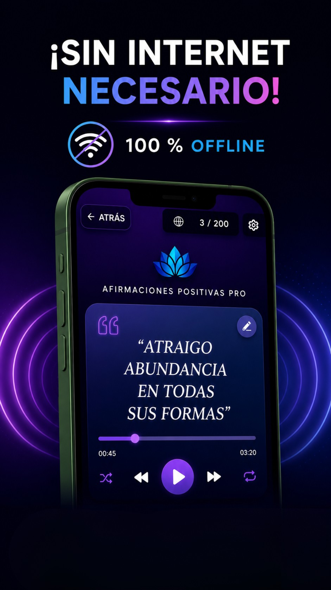
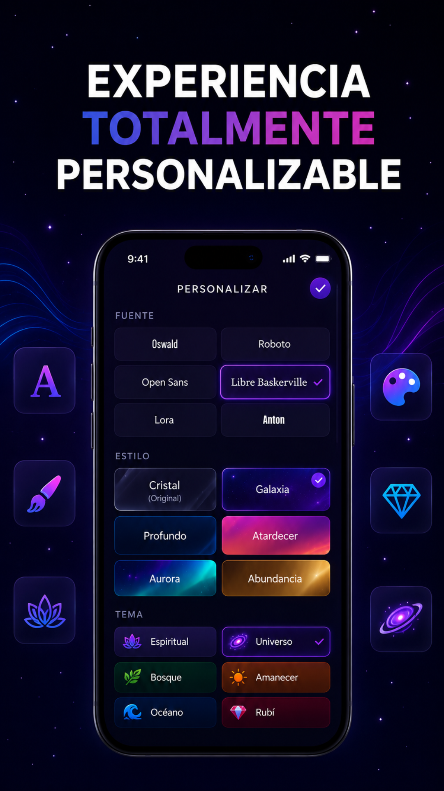
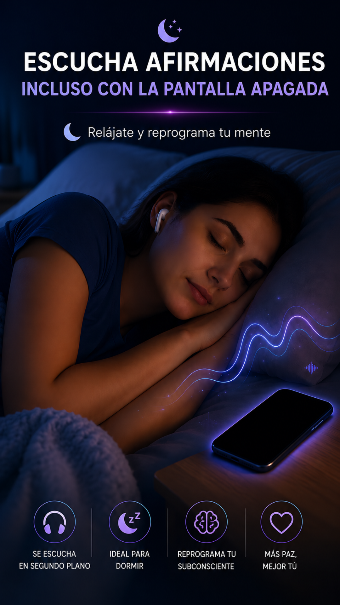
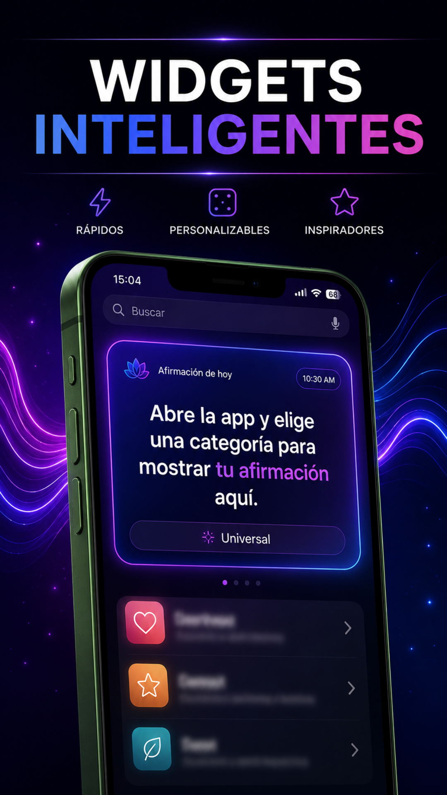
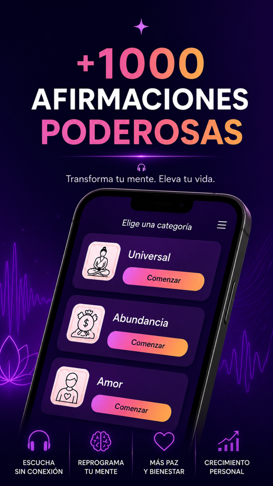
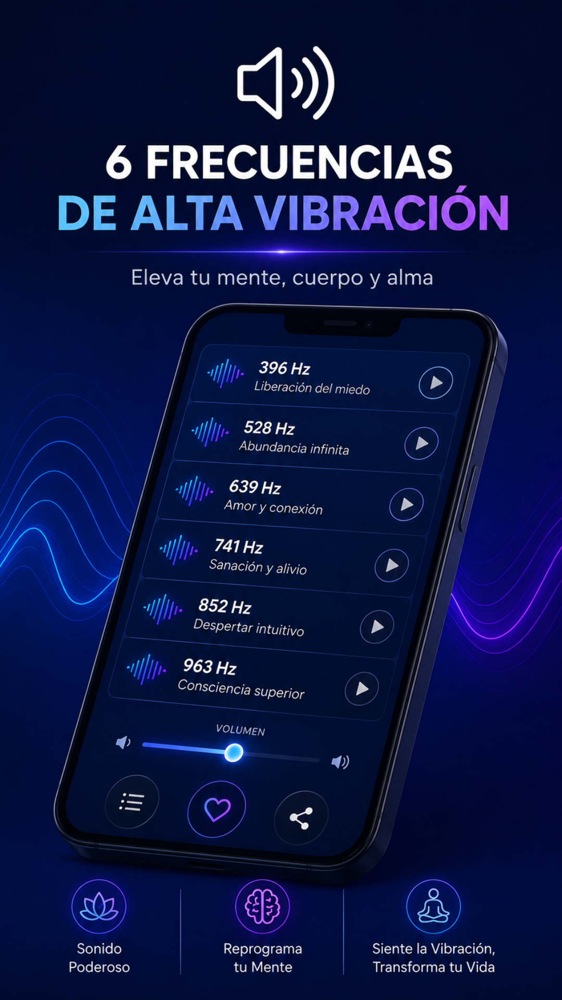

🎧 6 frecuencias y sonidos de fondo
Mezcla ambientes para entrar rapido en foco y sostener la energia durante toda la practica.
No es solo una app. Es tu espacio diario para construir una mentalidad fuerte, enfocada y alineada con tus objetivos con afirmaciones interactivas y audio guiado.
Elige la energia que quieres trabajar hoy y haz que cada sesion tenga direccion.
Mezcla ambientes para entrar rapido en foco y sostener la energia durante toda la practica.
Escucha afirmaciones estructuradas para interiorizar mejor cada mensaje positivo.
Ideal para dormir, caminar o entrenar sin interrupciones ni distracciones visuales.
Ajusta ritmo e intensidad para que la practica se adapte a tu momento.
Comparte mensajes con personas cercanas y expande energia positiva.
Inicia sesiones en segundos desde la pantalla principal.
Interfaz adaptable para cualquier horario y ambiente.
Personaliza la experiencia para que conecte contigo de verdad.
Funciona sin internet para que no pierdas constancia nunca.






Respuestas globales para entender por que una app de afirmaciones puede ayudarte a cambiar tu mentalidad y tus resultados.
Sirve para entrenar el dialogo interno con mensajes conscientes y repeticion diaria. Esto puede ayudarte a reforzar enfoque, seguridad personal, claridad mental y constancia en tus objetivos.
Reprogramar la mente significa reemplazar patrones mentales limitantes por pensamientos mas utiles. Es un proceso de practica, repeticion y enfoque que mejora la forma en la que interpretas tus experiencias.
Pueden funcionar cuando se usan con constancia, emocion y accion diaria. No son magia instantanea: son una herramienta para cambiar habitos mentales y sostener decisiones mas alineadas con tus metas.
Lo ideal es empezar con sesiones cortas de 5 a 15 minutos, una o dos veces al dia. La clave no es la duracion extrema, sino la repeticion consistente durante semanas.
El audio guiado mejora inmersion, ritmo y atencion. Escuchar una voz en off con frecuencias o sonidos de fondo puede facilitar que tu mente se enfoque y sostenga mejor la practica.
Pueden apoyar el bienestar emocional al reducir ruido mental y fortalecer pensamientos calmantes. No sustituyen apoyo medico o terapeutico cuando se necesita, pero si complementan una rutina saludable.
Si. Una app te guia paso a paso con categorias listas y opciones personalizadas. No necesitas experiencia previa para comenzar, solo intencion y practica regular.
Ambos momentos funcionan. En la mañana te ayuda a iniciar con enfoque; en la noche favorece descompresion mental. Muchas personas combinan ambas para mejores resultados.
Mayor claridad al tomar decisiones, mejor autoconfianza, reduccion de pensamiento negativo recurrente y una actitud mas orientada a soluciones y oportunidades.
Porque integra categorias utiles, audio inmersivo, personalizacion visual, modo offline y herramientas de uso diario en una sola experiencia facil y constante.